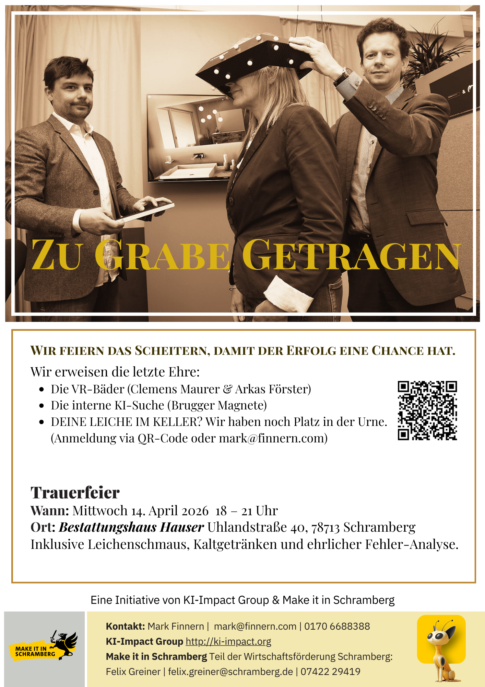

KI-Impact Group
Silicon Valley meets Black Forest
Zu Grabe getragen: Die Schramberger Sammelbestattung für tote Ideen
📅 Mittwoch, 14. April 2026, 18:00h | Bestattungshaus Hauser Jede tote Idee ist Dünger für den nächsten Erfolg! Wir sezieren gemeinsam gescheiterte Visionen und schauen mit KI-Rückenwind nach vorn. Mit Clemens Maurer, Arkas Förster & Brugger Magnete. Inklusive Leichenschmaus.
Platz reservieren Kalender-Eintrag KI-Impact GruppeZukunft sichern statt Notlösung! Betriebsnachfolge im Unternehmen
📅 Mittwoch, 25. Februar 2026, 18:30 Uhr | ErfinderZeiten SchrambergEin entscheidendes Thema für den Schramberger Mittelstand: Strategien zur erfolgreichen Übergabe und langfristigen Sicherung Ihres Unternehmens.
Per E-Mail anmeldenSUV – Schramberger Unternehmens-vesper Vol. 4
📅 25. März 2026, 18:00 Uhr | Szene64 SchrambergNetworking-Event für Unternehmer und Entscheider aus der Region.
AnmeldenMake it in Schramberg INSIGHT Vol. 2
📅 29. April 2026, 18:30 Uhr | Stiftung St. FranziskusEinblicke in innovative Unternehmenspraxis – hosted by Stiftung St. Franziskus.
AnmeldenChina – Wirtschaft, Politik, Zukunft
📅 15. Mai 2026, 18:30 Uhr | ErfinderZeiten SchrambergDiskussion über wirtschaftliche Entwicklungen in China und deren Auswirkungen auf den Mittelstand.
AnmeldenEigene Angebote & Training
KI-gestützte Prozessautomation mit n8n - Grundlagen
📅 Start: 3. März 2026Lerne KI-Workflows für den Mittelstand zu bauen – DIGIPAG Grundlagenkurs.
Zum KursInnovation in Baden-Württemberg
AI Conference Science x Business
📅 14.–15. April 2026 | 📍 HeidelbergNetworking zwischen Spitzenforschung und KMU im Heidelberg Innovation Park.
Heidelberg Details →Minds Mastering Machines (M3)
📅 22.–23. April 2026 | 📍 Karlsruhe (IHK)Der IT-Hotspot in BW: Alles über Machine Learning, GenAI und professionelle KI-Infrastruktur.
Karlsruhe Termine →Käpsele Innovation Festival
📅 16. Juli 2026 | 📍 Freiburg (Messe)Das Innovations-Highlight im Südwesten für Mittelstand und Tech-Gründer.
Freiburg Ticket →Nit schwätza - macha! :-)